Znak dziennika: runda 3, więcej tradingu i detalu
Po rundzie 2 (zbyt minimalistycznej): research znaków tradingowych, 12 szkiców z elementami tradingu, 3 finały w dwóch poziomach. Pełny znak z detalem ma od 180 do 512 px, a favicon z tej samej rodziny od 16 do 32 px. Tło #0b0e12, akcent #e8a44c; zieleń i czerwień tylko jako kolory świec. „Dziennik” to nazwa robocza (tekst roboczy).
Research
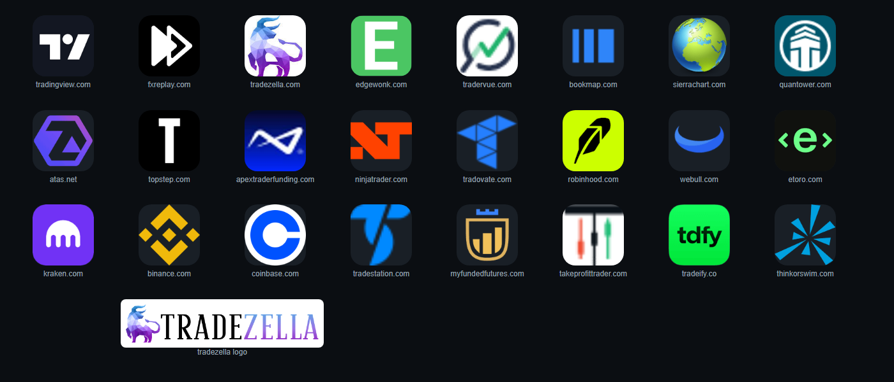
Świece z knotami (Take Profit Trader), słupki (Bookmap), byk (TradeZella), linia z ptaszkiem (Tradervue). Jeden motyw tradingowy wystarcza, żeby od razu było wiadomo, o co chodzi.
My Funded Futures: złota tarcza z koroną i słupkami na granacie. Najbliżej naszej tożsamości, bo akcent #e8a44c to właśnie złoto.
Metal z refleksem (gradient poziomy na korpusie świecy), podwójny grawer obrysu, siatka wykresu w tle na 4%, cień pod znakiem i ciepła poświata. Kolorów mało.
Łamana ze strzałką, klipart byka, pięć kolorów naraz. Unikamy: zieleń i czerwień tylko jako kolor pojedynczej świecy.
Herb i odznaka przy 16 px stają się plamą. Zawsze osobny favicon z tej samej sylwetki: obrys plus dwie świece, bez napisów i grawerów.
NQ w tarczy czyta się od 180 px. W faviconie znika, więc tam go nie ma.
12 szkiców
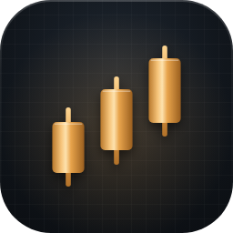
Trzy rosnące świece z knotami z metalicznego złota na siatce wykresu.Czytelne, ale to ikona giełdy jak wiele innych.
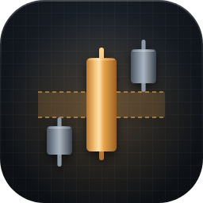
Świeca przemieszczenia w złocie, po bokach stalowe, między nimi zaznaczona luka (FVG).Najbardziej ICT. Przy 16 px luka znika, zostają 3 słupki.
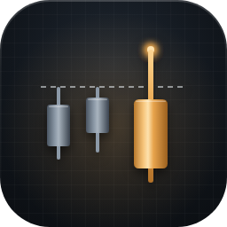
Przerywany poziom płynności nad szczytami, knot złotej świecy przebija go i wraca pod spód.Opowiada sweep, ale potrzebuje podpisu, żeby to zobaczyć.
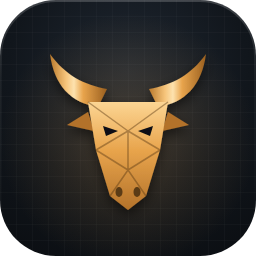
Głowa byka w ścianach jak szlif kamienia, złoto z fasetami.Mocny, ale byk to znak TradeZelli.
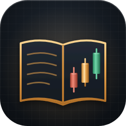
Otwarta księga: na lewej stronie wpisy, na prawej trzy świece dnia.Dziennik i trading naraz. Do finału.
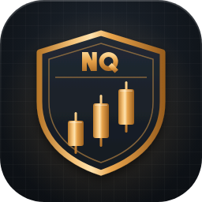
Tarcza z podwójnym grawerem, w środku trzy rosnące świece, u góry NQ.Herb jak u prop firm, złoto pasuje. Do finału.
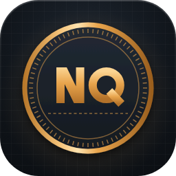
Okrągła pieczęć z ząbkowanym rantem jak moneta, w środku NQ i linia poziomu.Ładna moneta, ale NQ to rynek, nie dziennik.
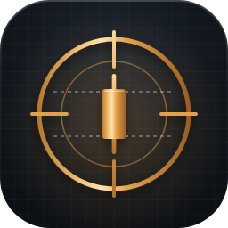
Celownik z pierścieniami i poziomami, złota świeca dokładnie w punkcie wejścia.Celownik kojarzy się z grą albo z bronią.
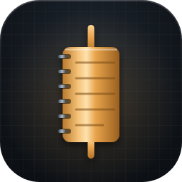
Jedna duża świeca, której korpus jest notesem: grzbiet z kółkami i linie wpisów.Najbardziej własny pomysł: świeca, która jest notesem. Do finału.
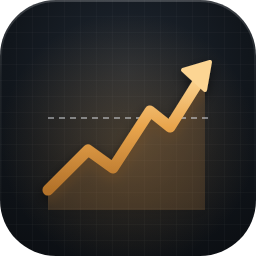
Łamana ceny przebija przerywany poziom i kończy się grotem, pod nią złota poświata.Strzałka w górę: najtańsza klisza.
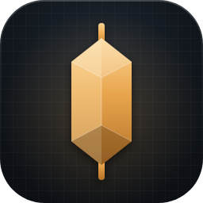
Świeca jako szlifowany kryształ: sześciokątny korpus z fasetami i knotami.Ładny szlif, ale bez świec czyta się jak klejnot.
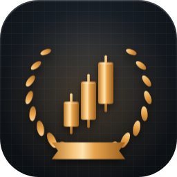
Odznaka: wieniec laurowy wokół trzech świec, pod spodem wstęga.Wieniec wygląda jak nagroda, nie jak narzędzie.
3 finały
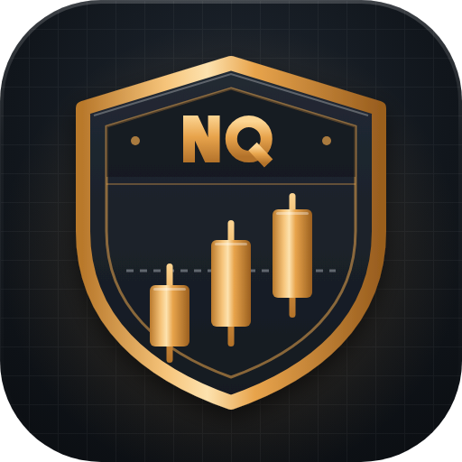
Finał A · ze szkicu 6
Herb
Złota tarcza z podwójnym grawerem, w pasie u góry NQ, w polu trzy rosnące świece nad przerywanym poziomem: emblemat jak u firm prop, w kolorach naszej marki.
8/10. 10 wyglądałoby tak: litery NQ narysowane przez liternika (teraz to geometria z prostokątów i koła, ogon Q jest za prosty), a na tarczy jeden własny detal, np. grawer siatki wykresu w polu, który zobaczysz dopiero przy 512 px. Favicon czyta się jako tarcza z dwiema świecami, ale przy 16 px świece są tylko dwiema kreskami.
Poprawione przed pokazaniem: N z wielokąta zamiast kreski (wcześniej szpikulce na rogach), pas z NQ przyciemniony i oddzielony podwójną linią, świece przeniesione nad przerywany poziom, światło na górnej krawędzi tarczy, osobny favicon: tarcza i dwie świece, bez napisu.
Dwa poziomy: pełny znak i favicon z tej samej rodziny
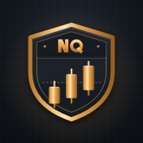
180 iOS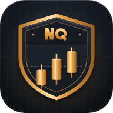
192Karta przeglądarki
Maskable (Android)
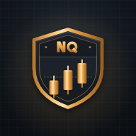
Ekran główny telefonu
Dziś
Przed sesjąPo sesjitekst roboczy
Ekran logowania
Dziennik
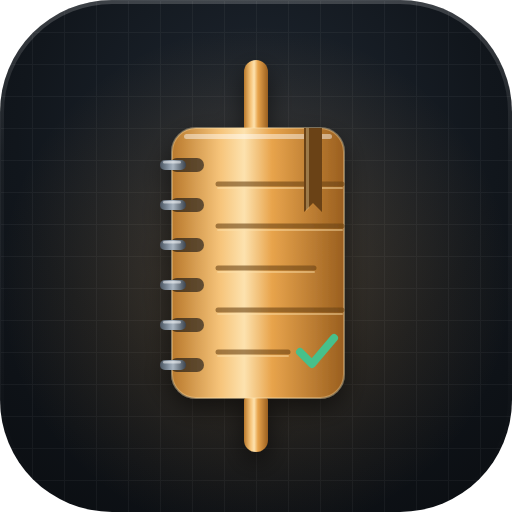
Finał B · ze szkicu 9
Świeca-dziennik
Jedna złota świeca, której korpus jest notesem: spirala z lewej, linie wpisów, zakładka i zielony ptaszek przy ostatnim wpisie.
7/10. 10 wyglądałoby tak: od pierwszego spojrzenia jest i świecą, i notesem. Teraz przy 512 px wygrywa notes, a knoty wyglądają jak oś zwoju. Brakuje też drugiej świecy albo poziomu, który od razu powiedziałby „trading”.
Poprawione przed pokazaniem: knoty pogrubione z 20 do 24 i z metalu (wcześniej ginęły), zakładka zmieniona ze stalowej na ciemne złoto (stalowa krzyczała), linie wpisów z grawerem: ciemna kreska i jasny refleks pod nią, favicon jako świeca z trzema liniami.
Dwa poziomy: pełny znak i favicon z tej samej rodziny
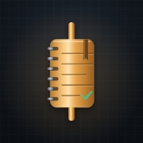
180 iOS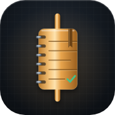
192Karta przeglądarki
Maskable (Android)
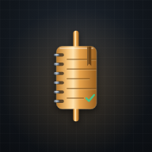
Ekran główny telefonu
Dziś
Przed sesjąPo sesjitekst roboczy
Ekran logowania
Dziennik
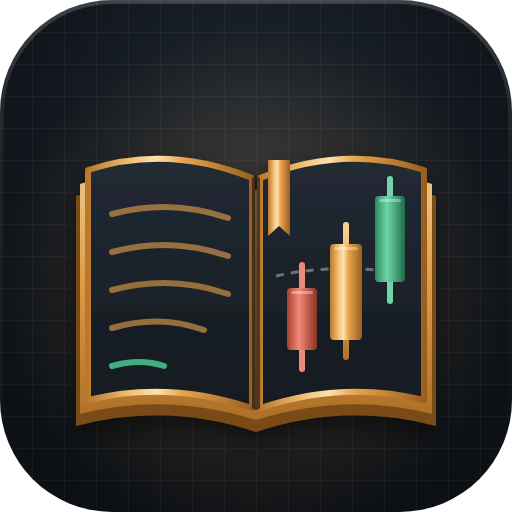
Finał C · ze szkicu 5
Otwarty dziennik
Otwarta księga ze złotymi krawędziami: na lewej stronie wpisy, na prawej trzy świece dnia (czerwona, złota, zielona) nad przerywanym poziomem i złota zakładka.
7/10. 10 wyglądałoby tak: dolne krawędzie kart układają się w czysty stos (teraz złoty spód wygląda trochę jak podwójna linia), a znak ma jeden środek uwagi zamiast dwóch równorzędnych stron. Przy 16 px to złota plama w kształcie książki, świeca ledwo widoczna.
Poprawione przed pokazaniem: dodany stos kartek pod stronami i cień grzbietu, zieleń i czerwień tylko na dwóch świecach i jednym wpisie, poziom przerywany przez prawą stronę, favicon: sylwetka książki, trzy linie i ciemna świeca na prawej stronie.
Dwa poziomy: pełny znak i favicon z tej samej rodziny
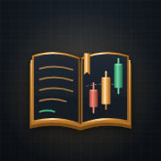
180 iOS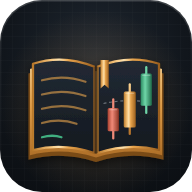
192Karta przeglądarki
Maskable (Android)
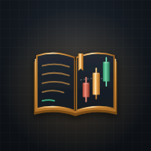
Ekran główny telefonu
Dziś
Przed sesjąPo sesjitekst roboczy
Ekran logowania
Dziennik
Pełny znak: siatka 512, kafel r = 112 z tłem #1f2731 → #0b0e12, siatka wykresu 4%, poświata akcentu 22%, cień pod znakiem; złoto #fcd593 → #e8a44c → #b3722a, metal jako gradient poziomy. Favicon: siatka 32, płaski kafel z ramką #35404d, uproszczony rysunek tej samej rodziny. Maskable: pełne tło, znak w 78%. Apple touch 180: pełne tło, znak w 90%.